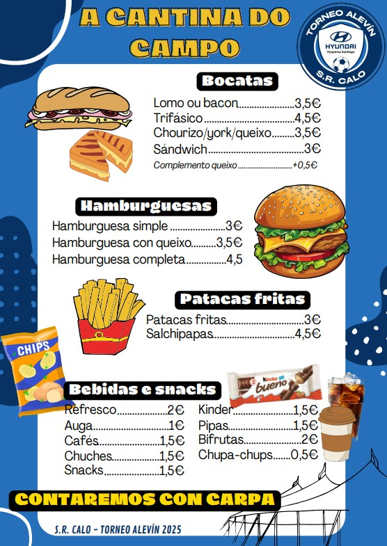
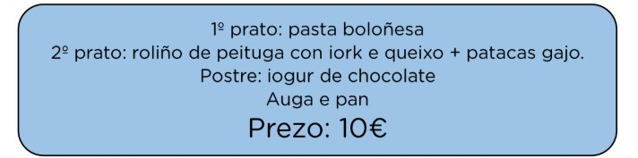
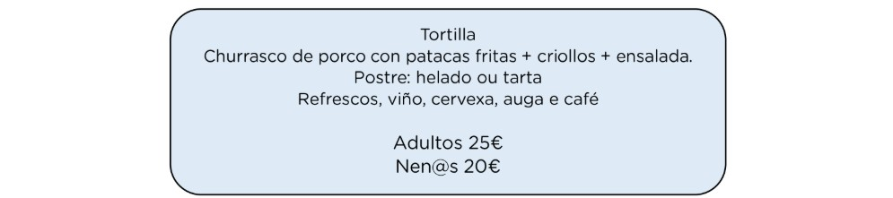
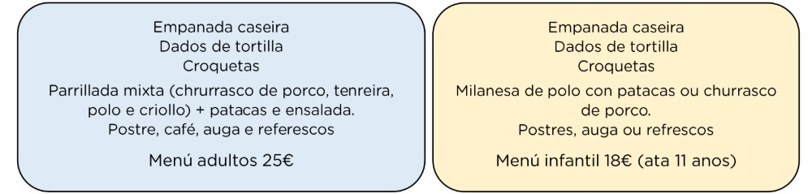

Organización das instalacións ▼
Parkings habilitados ▼
Normas do torneo ▼
Regulamento:
As normas son as establecidas pola organización do Torneo. Toda a normativa estará en poder da organización e a disposición dos equipos durante toda a competición.
- O sistema de competición estará dividido en fase de grupos, fases eliminatorias e finais.
- O Torneo levarase a cabo o Sábado 7 de Xuño de 2025 dende as 09:30h no Municipal de Rebordelo
Normativa Principal:
- O día do torneo, os delegados/as dos equipos deberán presentarse na zona de información como mínimo 15 minutos antes do seu primeiro encontro. Na mesa entregarán o listado de inscrición, que tamén pode ser enviado antes ó e-mail do Clube (deportes@srcalo.com) ou ó e-mail do torneo (torneosrcalo@gmail.com).
- Permítense un máximo de 15 xogadores/as por equipo. Os xogadores/as terán asignado un número, que será fixo durante todo o torneo. Unha vez comece o torneo, non se poderá modificar o listado.
- Cada equipo debe presentar, no caso de ser reclamadas pola organización, as licenzas federativas dos xogadores/as inscritos.
- Os equipos só poderán quecer nas zonas habilitadas, xunto a cada campo de F8.
- Os equipos deberán estar na zona de quecemento, e preparados para o encontro, 5 minutos antes do comezo do mismo. No caso dun retraso de máis de 2 minutos sobre a hora de comezo do encontro, este será dado por perdido ao equipo infractor por 3 goles a 0.
- Durante os encontros, só poderán estar no banco as persoas acreditadas no listado de xogadores/as, técnicos ou delegados/as.
- Calquera cartón vermello mostrado a xogadores, técnicos ou delegados/as impedirá a participación do expulsado/a no seguinte encontro.
- No caso dalgunha incidencia non reflectida neste regulamento, a organización resérvase o dereito a tomar as decisións que considere oportunas para o bo funcionamento do torneo.
- Se o equipo acude ao torneo con xogadores a proba, deberá presentar a debida autorización do equipo no que ten a ficha no momento da celebración do torneo.
Fase de grupos:
- Clasifícanse para CUARTOS OURO do 1º ao 4º de cada grupo.
- Clasifícanse para SEMIS PRATA o 5º e 6º de cada grupo.
- Cada partido gañado serán 3 puntos, empatado 1 punto, e perdido 0 puntos.
- En caso de empate na clasificación de grupos, terase en conta o enfrontamento directo, logo a mellor diferencia de goles, menos goles en contra e, por último, máis goles a favor. Se persiste o empate, lanzaranse 3 penaltis para dirimir o mellor clasificado.
- A duración dos encontros será de 22 minutos nun tempo único.
Fase final:
- CUARTOS OURO: Xogaranse 2 TEMPOS de 14 minutos.
- SEMIFINAIS OURO: Xogaranse 2 TEMPOS de 14 minutos.
- FINAL OURO: Xogaranse 2 tempos de 16 minutos cun descanso de 3 minutos.
- SEMIFINAIS PRATA: Xogaranse 25 minutos nun tempo único.
- FINAL PRATA: Xogaranse 2 tempos de 14 minutos.
- No caso de empate, o partido resolverase cunha quenda de 3 penaltis que se lanzarán de forma alternativa. Se persiste a igualada, seguiranse lanzando penaltis ata desfacer a mesma. Un xogador non volverá lanzar un penalti ata que non tirasen todos os seus compañeiros/as.
Menú da cantina ▼
Dispoñemos dunha cantina para que tomedes algo e repoñades forzas!
Comida para xogadores/as e corpo técnico ▼
O comedor estará situado ao lado do campo, no local da S.R. Calo, alí haberá persoal do noso club para garantir a orde e que todo sexa entregado segundo a reserva feita. O menú sera elaborado por unha empresa externa ao club, todos os productos e preparacións pasan uns controis rigurosos de calidade.
Menú proposto:
Horarios das comidas
| Equipo | Turno | Horario |
|---|---|---|
| S.R. Calo | 1 | 13:30 - 14:10 |
| S.D. Villestro | ||
| C.D. Lugo | 2 | 13:45 - 14:30 |
| S.P. Portugal Academy | ||
| E.D.Val Miñor | 3 | 14:10 - 14:55 |
| U.D. Santa Mariña | ||
| F.C. Famalicão | ||
| G.D. Chaves | ||
| Pabellón Ourense C.F. | 4 | 14:35 - 15:20 |
| Club Atlético Arteixo | ||
| Ural-Español C.F | ||
| Victoria C.F |
Comida para acompañantes ▼
A maiores da nosa maravillosa cantina, dispoñemos de dous establecementos nos que vos recomendamos ir a comer:
ASADOR ALDEA BAYUCA
Unha distancia duns 11 minutos ao campo de fútbol de Rebordelo, ten opción de adaptación de menús a veganos/as e intolerantes e con espacio exterior en caso de bo tempo.
O menú é o seguinte:
Ubicación Asador Aldea Bayuca
RESTAURANTE SAN MARTIÑO
Unha distancia duns 5 minutos ao campo de fútbol de Rebordelo, ten opción de adaptación de menús a veganos/as e intolerantes, conta cun pequeno parque para os nenos/as.
O menú é o seguinte:
Ubicación Restaurante San Martiño
⚠️Nota:Estos menús e prezos son en caso de ter reservado antes do 03/06/2025. Á hora de chamar, explicar que se chama para reservar polo torneo da S.R.Calo.